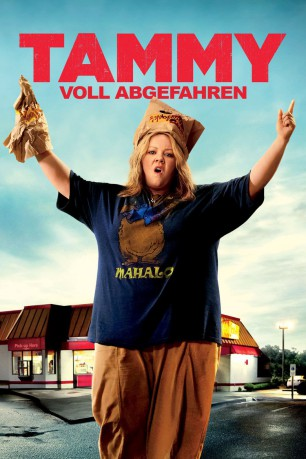
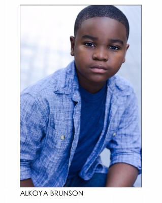

#6582 Tammy - Voll abgefahren
Alternativ: Tammy
 
 IMDB-Wertung: 4.9 / 10
IMDB-Wertung: 4.9 / 10  Metascore: 0
Metascore: 0 
Für Tammy läuft es wirklich schlecht: Erst fährt sie ihr ohnehin sehr klappriges Auto zu Schrott, dann verliert sie ihren Job in einem Burgerladen. Sie will nur noch nach Hause, sich an der Schulter ihres Mannes ausweinen - muss jedoch feststellen, dass der sich gerade mit der Nachbarin im heimischen Bett vergnügt. Bloß weg, denkt Tammy! Allerdings fehlen ihr sowohl die finanziellen Mittel, als auch der fahrbare Untersatz, um ihren Fluchtplan in die Tat umzusetzen. Die einzige Person, an die sie sich nun wenden kann, ist ihre alkoholkranke Großmutter Pearl. Einen Anruf später sind die beiden Frauen auch schon auf einem heißen Ritt zu den Niagarafällen. Die wollte Pearl schon immer mal besuchen, die Enkelin muss kurzerhand mitkommen. Obwohl ihr Ausbruch aus dem Alltag anders hätte laufen sollen, realisiert Tammy langsam, dass ihr die teils halsbrecherische Fahrt mit der Oma langsam Spaß zu machen beginnt
Jahr: 2014
Dauer: 96 Minuten
FSK: 12
Land: USA Studio: Warner Bros.Tonspuren: DD5.1 - ,
Untertitel: Deutsch,
Auflösung: 1080p (1920x1080) Größe: 7823 MB
Genre: Komödie, Liebe
Regisseur: Ben Falcone
Drehbuch: Melissa McCarthy
Soundtrack:
Darsteller:
 Melissa McCarthy als Tammy
Melissa McCarthy als Tammy Susan Sarandon als Pearl
Susan Sarandon als Pearl Kathy Bates als Lenore
Kathy Bates als Lenore Allison Janney als Deb
Allison Janney als Deb Dan Aykroyd als Don
Dan Aykroyd als Don Mark Duplass als Bobby
Mark Duplass als Bobby Gary Cole als Earl
Gary Cole als Earl Nat Faxon als Greg
Nat Faxon als Greg Toni Collette als Missi
Toni Collette als Missi Sandra Oh als Susanne
Sandra Oh als Susanne Ben Falcone als Keith Morgan
Ben Falcone als Keith Morgan Sarah Baker als Becky
Sarah Baker als Becky- Rich Williams als Larry
 Steve Little als Jet Ski Rental Guy
Steve Little als Jet Ski Rental Guy Mark L. Young als Jesse
Mark L. Young als Jesse- Mia Rose Frampton als Karen
 Oscar Gale als Javier
Oscar Gale als Javier- Willie Hill als Prison Guard
 Zach Hanner als Man at Blue Post Bar-B-Que
Zach Hanner als Man at Blue Post Bar-B-Que- Jason Vail als Man at Blue Post Bar-B-Que
- Larry Dorf als Officer Mannis
- Ricky Muse als Officer Curtis
- Barbara Weetman als Officer Carty
- William Flaman als La Grange Bail Cop
 Rey Hernandez als Cop at Lakehouse
Rey Hernandez als Cop at Lakehouse- Penn Holderness als News Anchor
- Rochelle Aycoth als Party Go-er , uncredited
- Sheila Brothers als Connie , uncredited
-  Alkoya Brunson als Playground Kid #1 , uncredited
- John Carter als Bar Patron , uncredited
- Mia Clarke als Teen at Lake , uncredited
- Zoe Clarke als Little Girl at Restaurant Counter , uncredited
- Illie Dawson als Officer Glen , uncredited
- Dale Deacon als Nursing Home Staff , uncredited
- Tom Gore als Dancer , uncredited
- Randi Langdon als Niagara Falls Tourist , uncredited
- Chris Matheny als Pedestrian with Car , uncredited
 John Merical als Retirement Home Visitor , uncredited
John Merical als Retirement Home Visitor , uncredited David Pascua als Tourist , uncredited
David Pascua als Tourist , uncredited- Darrell Rackley als (uncredited
- Michelle Rivera als Arresting Cop , uncredited
- J.R. Rodriguez als Kentucky Trooper , uncredited
- David Schifter als Drunk Single Guy , uncredited
- Emily Shaules als Party Guest , uncredited
- Rob Springer als Gene the Cook , uncredited
- Shelby Townsend als Canoe Teen , uncredited
- Patrick Veihmeyer als Bar Patron , uncredited
- Angela Marie Williams als Market Shopper , uncredited
- Bryce Zentkovich als Playground Kid #2 , uncredited
- Dakota Lee als Kathleen
Datei: X:\2014(N-Z)\Tammy - Voll abgefahren (2014, FSK12, 1920x1080).mkv seit 14.07.2017
Festplatte: HD 2013(I-Z)-2014(A-Z)
 Es gibt insgesamt 163 Filme in der Gruppe '2014(N-Z)'
Es gibt insgesamt 163 Filme in der Gruppe '2014(N-Z)'